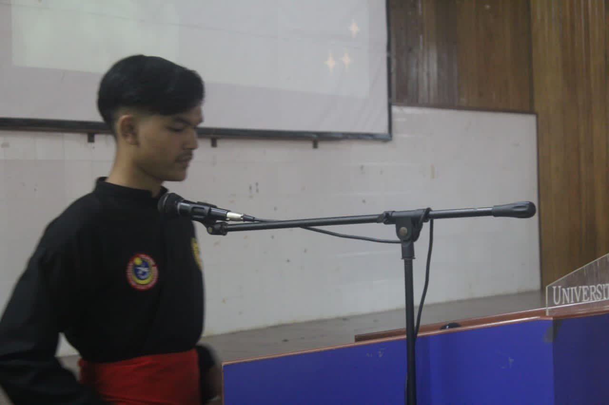
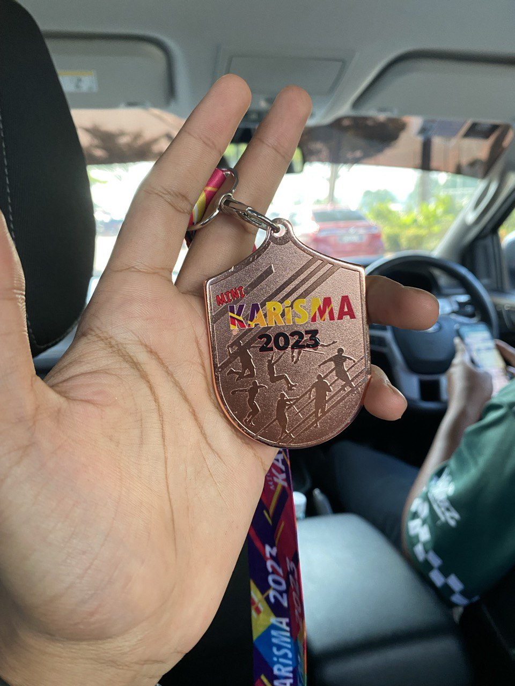

Achievement Gallery






Years Attended: 2011 - 2016
Years Attended: 2011 - 2016
Years Attended: 2018 - 2020
Years Attended: 2021 - Present
| School | Achievement |
|---|---|
| SK Saujana Impian 2 |
|
| Abim Al-Busyra |
|
| SMK Saujana Impian |
|
| UiTM Segamat, Johor |
|